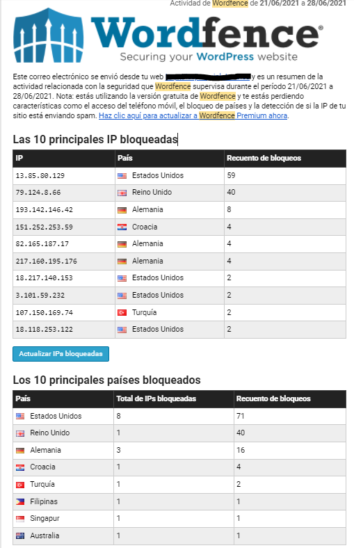

Cuando se produce un ataque cibermético es necesario realizar dos tipos de intervenciones:
Cuando se produce un ataque cibermético es necesario realizar dos tipos de intervenciones:
1. Averiguar qué ha pasado y quienes son los responsables.
2. Reparar los daños causados (recuperar datos, equipos, etc...)
El análisis forense es una disciplina que combina los elementos del derecho y la informática para recopilar y analizar datos de sistemas informáticos, redes, comunicaciones inalámbricas y dispositivos de almacenamiento de una manera que sea admisible como prueba en un tribunal de justicia.
1. Análisis de IPs.


En la imagen puedes ver un informe de un plugin de seguridad de Wordpress, donde nos muestra las IPs de los host desde donde se han producido varios intentos de atacar la Web de un Instituto de Secundaria.
Vamos a investigar un poco para ver su origen :
¿Cuál es la IP del atacante?
¿Desde dónde se han producido el ataque?
¿Coincide con el origen del listado?
En la siguientes páginas encontrarás un par de herramientas que te ayudará a geolocalizar tu IP actual y la IP que escribas en el cuadro de texto, de forma fácil y rápida.
Ten en cuenta que los resultados que muestra la geolocalización de IP por coordenadas (latitud y longitud) es aproximado. Estos datos deben ser tomados con carácter orientativo.
Prueba a geolocalizar al menos , tres de las IPs del informe de la foto.
- Geolocalizar mi ip en la web cual-es-mi-ip.net.
- Geolocalizar ip en adslayuda.com/geolocalizacion.html
El término host o anfitrión se usa en informática para referirse a las computadoras u otros dispositivos (tabletas, móviles, portátiles) conectados a una red que proveen y utilizan servicios de ella.
En informática, un complemento o plug-in es una aplicación (o programa informático) que se relaciona con otra para agregarle una función nueva y generalmente muy específica.
Lumen dice ¿Alguien puede saber algo de mí usando geolocalización IP?
Poca cosa más que la ciudad en la que vives (o desde dónde dices conectarte en el caso que emplees alguna tecnología para enmascarar la procedencia de tu IP, como un proxy o una VPN). De todas formas, solamente este dato ya puede ser algo preocupante para las personas preocupadas con su privacidad y seguridad.
No obstante, piensa que, en primer lugar, para saber desde dónde te conectas, otra persona deberá conocer en primer lugar tu dirección IP, lo cual puede ser fácil si se tienen conocimientos técnicos, pero no lo es en absoluto si se carece de ellos.
2. Un caso real
Reflexiona en grupo sobre la lectura siguiente y sus implicaciones éticas y morales.
Lectura
El tapón legal que impide que el móvil sirva para encontrar a personas desaparecidas.
El cuerpo sin vida de Juan Manuel Zornoza se encontró en la Serra de Gallcanta, cerca de Manresa. Tenía 68 años, había salido a caminar por la mañana y empezaron a buscarlo después de mediodía. Pese a que su móvil daba tono de llamada, es decir, estaba encendido y con cobertura, fue imposible localizarlo y ahorrar un día entero de búsqueda.
La familia pidió que se utilizara cualquier medio para localizar el smartphone del desaparecido. Se intentó la triangulación por antenas, pero no daba un punto preciso. Y no había ningún cauce rápido y legal para obtener la geolocalización del móvil, normalmente activada por defecto en estos dispositivos. Los equipos de rescate siempre aluden a la importancia de las primeras horas para encontrar con vida a la persona. Pero aquí se topan con un muro en el que están implicados el derecho a la privacidad, la burocracia interna de las compañías y la falta de protocolos de actuación.
Google y Apple, las dos empresas que dominan los sistemas operativos de los móviles, registran información periódica sobre la ubicación de los Android y de los iPhone. Cuando esta se encuentra activada se emplea para mejorar algunos servicios, así como para enviar publicidad online basándose en intereses personales. En las políticas de Google se ilustra con este ejemplo: “Si tienes el historial de ubicaciones habilitado y visitas estaciones de esquí frecuentemente, puede que se te muestre un anuncio de equipamiento de esquí al ver un vídeo en YouTube”.
“Desde hace unos años, cuando empezó a mandarse la ubicación por WhatsApp, esto ha pegado un salto tremendo. Ahora, cuando alguien se pierde, se le localiza en cuestión de minutos si te consigue mandar el mensaje con la localización. Es ir a tiro hecho”, afirma Miguel Ángel Rodríguez, jefe de dotación del GERA en Navacerrada. “Antes no era así. Cuando tú contactabas, aunque la persona te cogiera el teléfono, solo te podía decir desde dónde había salido, por dónde había circulado, qué veía.”.
El caso de Juan Manuel Zornoza muestra la realidad de otro tipo de búsquedas, en las que no se puede contactar con la persona, pese a que el móvil tiene cobertura. Isabel, su mujer, solo tiene palabras de agradecimiento para los equipos de rescate y para los voluntarios que ayudaron en aquellas horas de incertidumbre. Pero le queda la amargura de que no se pudiera localizar el móvil de ninguna forma. No puede comprender cómo con toda la tecnología que existe hoy esto no era posible. La respuesta de los equipos de búsqueda siempre era la misma: no es legal. “Pero en un caso de vida o muerte…”, insiste ella.
Para buscar a Juan Manuel se desplegaron dos helicópteros y ocho dotaciones terrestres, de Mossos d’Esquadra y Bombers de la Generalitat de Catalunya. Se pidió la triangulación de las antenas para localizar el terminal, pero no se pudo hacer nada para obtener la ubicación del smartphone que registra periódicamente la cuenta de Google (en este caso se trataba de un Android). Finalmente un familiar lo encontró, ya fallecido, buscando con su moto de motocross. Había pasado un día entero.
Lumen dice ¿Qué es lo importante?
Céntrate en responder a preguntas como las siguientes:
- ¿Sabes enviar tu geolocalización con tu móvil?
- ¿Lo has hecho alguna vez?, pon ejemplos.
- ¿Es más importante el derecho a la privacidad o la integridad física?
- ¿Crees que es bueno que Google o Apple sepan siempre tu localización?
- ¿Para qué quieren esa información?